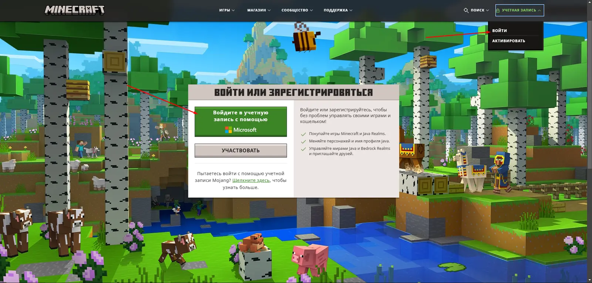
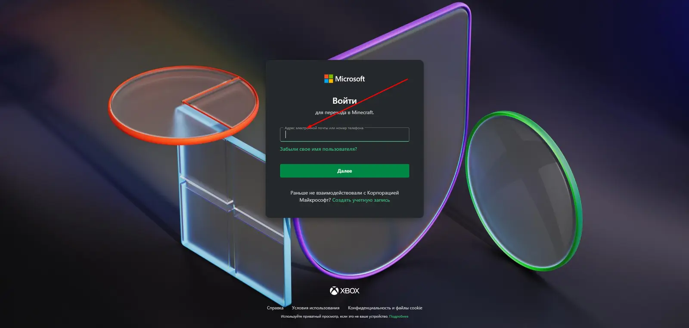
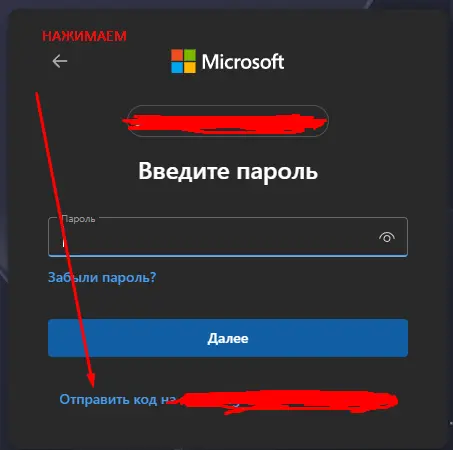
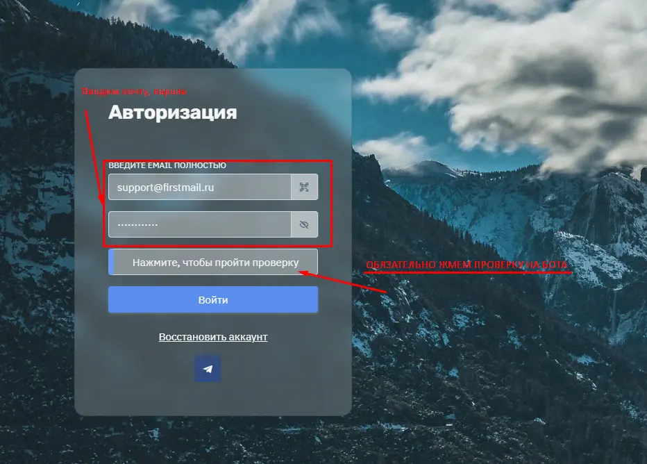
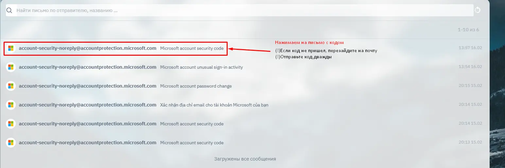
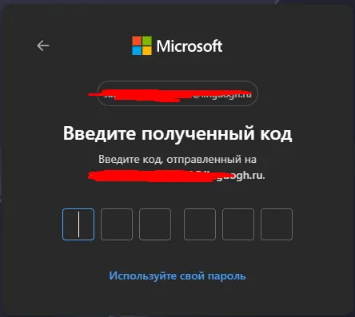
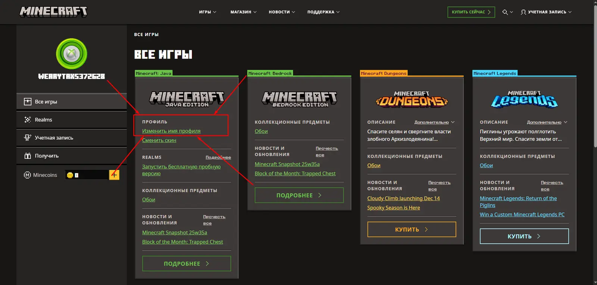
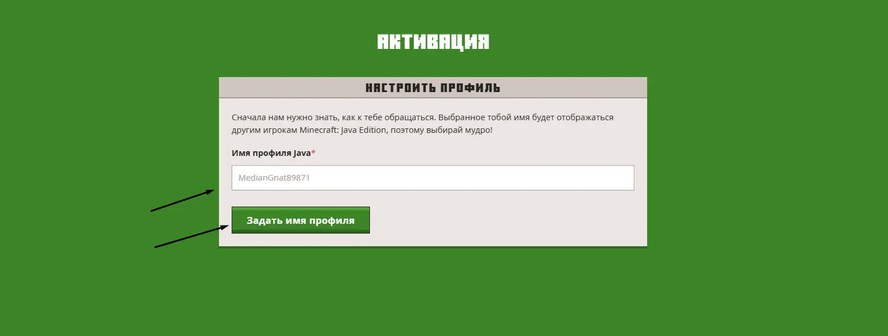
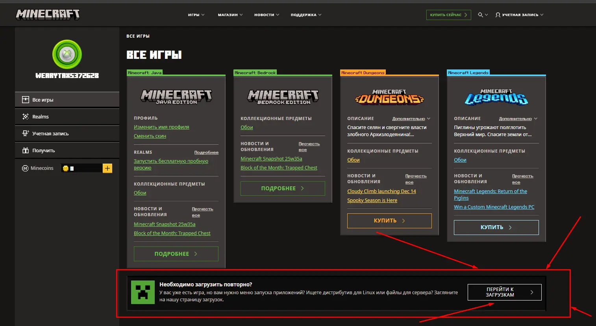

ШАГ 01
Откройте сайт Minecraft
Перейдите на официальный сайт Minecraft и нажмите кнопку «Войти» в правом верхнем углу.
В появившемся окне выберите «Войти с помощью Microsoft».

Следуйте шагам по порядку. Инструкция займёт несколько минут и поможет избежать ошибок при авторизации.
После покупки вы получаете почту и пароль. Скопируйте данные без лишних пробелов и сохраните их до завершения входа.
Перейдите на официальный сайт Minecraft и нажмите кнопку «Войти» в правом верхнем углу.
В появившемся окне выберите «Войти с помощью Microsoft».

В окне Microsoft укажите адрес почты, который вы получили после покупки.
Перед продолжением проверьте адрес: одна неверная буква не позволит получить код.

Если Microsoft показывает поле пароля, нажмите ссылку «Отправить код» под формой.
Код придёт в почтовый ящик, данные от которого были выданы вместе с заказом.

Откройте firstmail.ltd. Введите полученные почту и пароль, затем нажмите «Войти».

Откройте самое новое письмо от Microsoft и скопируйте одноразовый код.
Если письма пока нет, подождите 1–2 минуты, обновите страницу и проверьте папку «Спам».

Вернитесь в окно Microsoft, вставьте код из письма и подтвердите авторизацию.
После проверки вы автоматически войдёте в аккаунт Minecraft.

Откройте раздел профиля Minecraft и выберите пункт создания имени профиля.
Введите желаемый никнейм и нажмите «Задать имя профиля». Если имя занято, придумайте другое.


На сайте Minecraft скачайте официальный Minecraft Launcher. Запустите его и выберите вход через Microsoft.
Используйте тот же аккаунт, с которым входили на сайте.

VPN используйте только при необходимости, например если сайт или окно Microsoft недоступны в вашем регионе. Если ошибка сохраняется, сделайте скриншот и напишите в чат заказа.